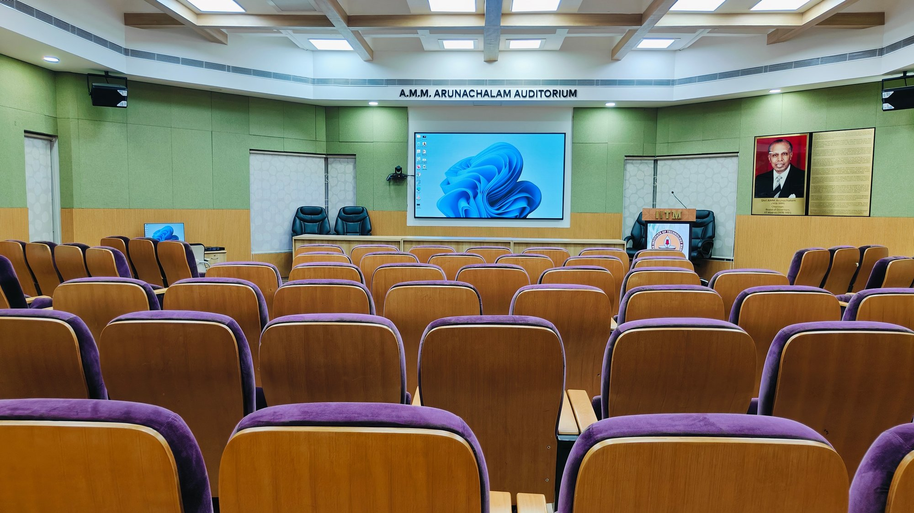

240 SEATSAUDITORIUM
TTJ Auditorium
Full interior, audio & video renovation. 240-seat auditorium rebuilt for VVIP and institute events.
Result: Reliable, large-format venue for flagship events.
PORTFOLIO • AV SYSTEMS • CONFERENCE TECHNOLOGY • IT OPERATIONS
Lead Engineer at Office of Industrial Consultancy & Sponsored Research, IIT Madras. I design, deliver and run enterprise AV & IT infrastructure for VVIP, industry and international summit events.
Contact for RolesView Projects ↓Years in AV & IT
Seats Delivered
Major Renovations
Member Team Led
End-to-end ownership: design, BOQ coordination, installation, commissioning, earthing & UPS power backup, and live event support.
Full interior, audio & video renovation. 240-seat auditorium rebuilt for VVIP and institute events.
Result: Reliable, large-format venue for flagship events.

End-to-end renovation — interior, acoustics & AV.

85-seat hall with video wall and full conferencing.
Lead Engineer, IT — ICSR, IIT Madras (Present)
From Electrical Technician → AV & IT Lead. 5+ years at ICSR, 13+ years overall.
✓ Crestron Certified
Audio Technician
✓ Xilica Designer
Certified
Gopikrishna T
Lead Engineer, Information Technology
Office of Industrial Consultancy & Sponsored Research
IIT Madras, Chennai
✉️ icsrit8@icsrpis.iitm.ac.in
☎️ 044 2257 9743 / 44
🔗 linkedin.com/in/gopikrishna-t
Open to AV & IT leadership roles — 14.5–15 LPA target.